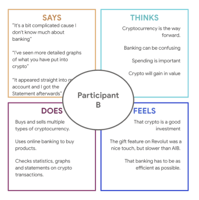
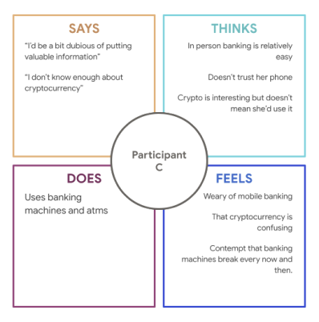
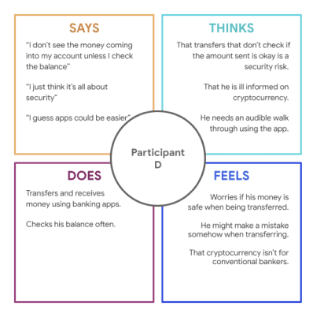
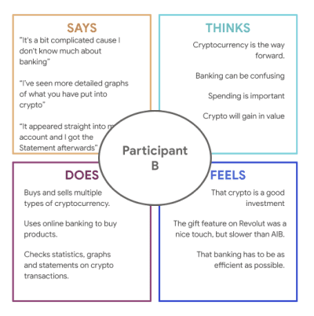
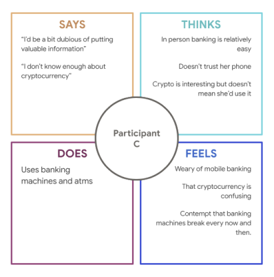
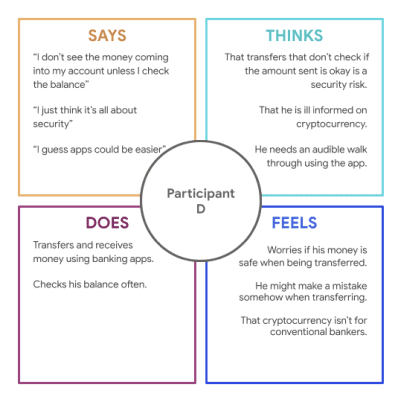
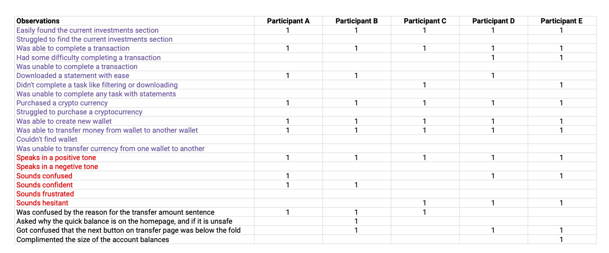

Thomas Kelly
Cryptodeliver

Overview
Cryptodeliver was a cryptocurrency trading website project aimed at all levels of cryptocurrency trader.
Goal: was to make an easy to use platform that could be picked up by a cryptocurrency beginner and have them complete a transfer or purchase with minimal pain points.
Role: UX Lead
Duration: 2 Weeks
Empathising and Understanding
The first step taken to understand what new cryptocurrency users expect and need from a trading platform, was to conduct user interviews.
Interviewees consisted of cryptocurrency newbies (target user), regular banking users (with no knowledge of cryptocurrency), and experienced cryptocurrency traders. The wide range of participants was to ensure that we designed a platform that can be used by the extreme ranges of the cryptocurrency knowledge spectrum.
“I’d like to try cryptocurrency, but it looks too complicated” -Participant A
“It just doesn’t work sometimes, transferring crypto from one wallet to another” -Participant B
After all interviews were conducted, empathy maps were created to visually display to the team all of the information we gathered.
 





Main information gathered;
- Users feel cryptocurrency is too complicated
- Cautious of it being a scam and giving out information
Defining Problems & Scope
From the information gathered from the interviews and empathy maps, we created 3 user personas to best represent who we were making the cryptocurrency trading for.
When the user personas and user stories were created, we brainstormed the MVP we needed to create this project, given the time constraint.
With a basic user flow in mind, we created user journey maps, to ensure the flow was heading in the right direction and that we were aware of any pain points.
Upon completing the user journey maps, we conducted a competitive audit to refine or knowledge of what we needed for the user flow.
The audit was conducted on industry leaders in the trading and cryptocurrency space.
Wireframing
Using the information we gathered from the audit, our ideas from the MVP brainstorm and reflection on the user journey map, we created wireframes for each page of the cryptocurrency trading website.

Do these designs solve user problems?
- We had the idea to alter the cryptocurrency transfer process, by adding text, to better help the user understand what is happening during the transfer and to stop the confusion they may experience from large displays of numbers.
- A quick balance section is added to the homescreen, so users can check their balance on the go without showing account details. This addresses privacy concerns.
Below are a number of screens from the digital wireframes.

Testing the design
To test the design, we conducted moderated usability studies. The participants consisted of 2 professional investors and 3 cryptocurrency newbies.
The observations from the usability studies were gathered. We then sorted them into themes and pattern on an affinity map. This helped us to understand where there were still pain points, and what was pleasurable about the user flow.
Insights were created to define what needed changing for the high-fidelity mockups.
Changes made;
- CTAs were moved above the fold.
- Wording / phrasing was made to be more beginner friendly.
- A sign-in screen was created for extra security.
Final designs
While I was not a part of the UI Design process after the usability test, I will explain the thought behind some design choices and considerations.
The log in screen can take users to either their own account or to a general homepage with information about the platform. This was added as an extra security measure.
The home page has the quick balance feature where users can see their crypto balance in their main wallet and their cash balance.
There is also a welcome back message for returning users to provide a more warm and trusting user experience.
On the crypto page, users can see their cryptocurrency assets in either a pro or simple mode, which provide different levels of information.
The wallet feature was also condensed onto this page instead of having its own page. Users can add a wallet and add assets to their different wallets.
Due to investors constantly buying and selling assets, I designed the statements page to be easily navigable
The filter feature ensures that users can find the statements they are looking for.
The ability to download statements is also included, so investors can show funds in a portfolio or so a business owner can provide a receipt.
The transfer pages were as simplified as they possibly could be.
Users have the ability to add multiple payment recipients and to choose if funds go to each of them individually or altogether.
Payments can also be paid in cryptocurrency from different wallets.
Results and Takeaways
The finished product, while not being super polished or functional, was a great exercise in working with a team under a strict deadline on a topic which not all members of the teams have a knowledge of.
Takeaways;
- Co-creation would have been a smart idea since not many team members had a background or had experience in cryptocurrency.
- Working on refining the user flow, specifically in important flows such as the transfer, is important.
- Focussing on one major problem instead of 3 is a good idea in the beginning.